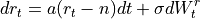

quantlib.processes.hullwhite_process.HullWhiteProcess¶
- class HullWhiteProcess(YieldTermStructure risk_free_rate_ts, Real a, Real sigma)¶
Bases:
StochasticProcess1DHull-White process
a diffusion process for the short rate, with mean-reverting stochastic variance.

- __init__(*args, **kwargs)¶
Methods
__init__(*args, **kwargs)diffusion(self, Time t, Real x)drift(self, Time t, Real x)expectation(self, Time t0, Real x0, Time dt)factors(self)size(self)std_deviation(self, Time t0, Real x0, Time dt)variance(self, Time t0, Real x0, Time dt)Attributes
asigmax0